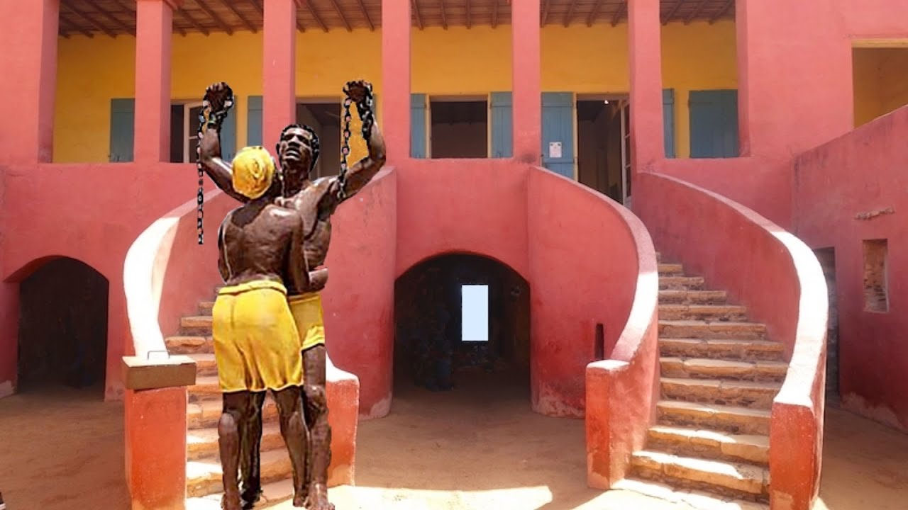
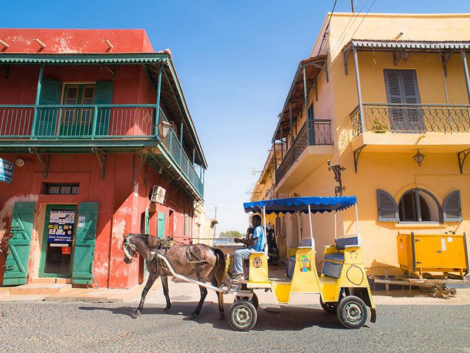

Destinations populaires

Dakar
La capitale animée du Sénégal, connue pour ses plages magnifiques, sa vie nocturne vibrante et son artisanat local.

Gorée
Une île historique au large des côtes de Dakar, connue pour son rôle dans la traite des esclaves et son architecture coloniale.

Saint-Louis
Une ville insulaire située dans le nord du Sénégal, célèbre pour son architecture française et sa musique traditionnelle.